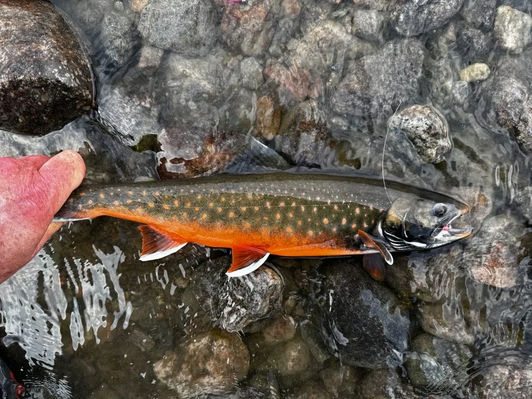

鱼类 · 动物界
北极红点鲑 Salvelinus alpinus

分布最北的淡水鱼之一，体侧有淡色斑点、腹部繁殖期变红，有溯河和陆封的两类种群，耐寒性极强。
- 分类
- 门脊索动物门纲辐鳍鱼纲目鲑形目科鲑科属红点鲑属
- 栖息环境
- 北极和亚北极的河流、湖泊及沿海，耐寒性强
- 地理分布
- 环北极地区，从加拿大、格陵兰、北欧到俄罗斯北部，中国新疆有分布
- 保护级别
- IUCN 无危（LC）；中国未列入国家重点保护野生动物名录
物种志
北极红点鲑体呈纺锤形，体色背部暗绿或灰褐，体侧银灰，散布着淡黄色或粉红色小斑点，繁殖期腹部和鳍条变红。成鱼体长一般 30–60 cm，最大可达 1 m，体重可达 10 kg 以上。
北极红点鲑呈环北极分布，从加拿大、格陵兰、冰岛、北欧到俄罗斯北部，中国新疆额尔齐斯河上游也有分布。它有溯河和陆封两种生态型：溯河型在海洋中育肥后回河产卵，陆封型则终生留在湖泊中。它耐寒，能在水温接近 0 ℃ 的水域活动，吃鱼、虾、昆虫和浮游动物。北极红点鲑是北极地区重要的食用鱼和游钓鱼，也被用于养殖。由于气候变化和过度捕捞，部分种群下降，目前 IUCN 评估为无危。
形态与习性
- 食性鱼、虾、昆虫和浮游动物
- 体长一般 30–60 cm，最大可达 1 m
- 体重最大可达 10 kg 以上
- 生态型有溯河型和陆封型两类种群
- 耐寒性能在水温接近 0 ℃ 的水域活动
- 繁殖秋季在砾石底河段或湖岸产卵
趣味知识
- 北极红点鲑是分布最靠北的淡水鱼之一，能在冰下活动。
- 它有溯河和陆封两种生态型，外形和习性都有差异。
- 繁殖期它的腹部会变成鲜艳的红色，因此得名“红点鲑”。